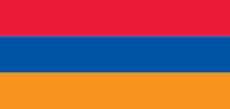
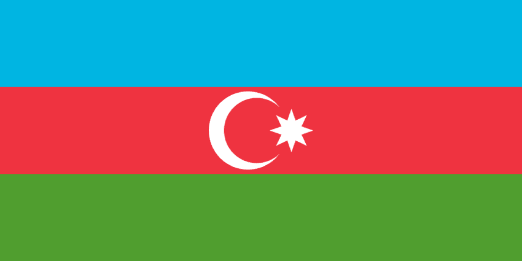
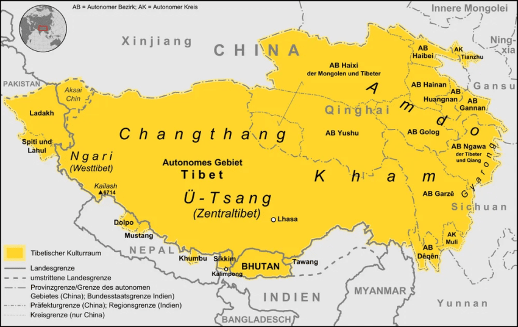
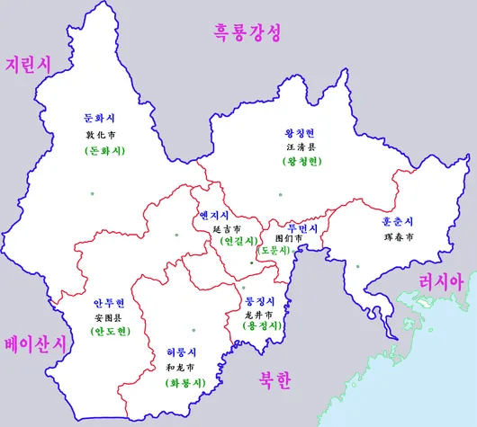

특정 민족을 위한 국가가 존재하는데도 해당 국가보다 타국 디아스포라 인구가 더 많은 나라들은 여전히 존재함
주로 국내외 사정 때문에 이주하거나 해당 민족이 사는 영토가 다른 나라 땅이 되거나 그런 이유가 있음
아일랜드
아일랜드 섬의 인구는 아일랜드+북아일랜드까지 다 합쳐서 720만 명 정도인데, 아일랜드계 미국인만 해도 4000만 명 정도 된다고 함. 영국 독일 다음 미국에서 3번째로 많은 민족이다. 주로 19세기 중반 대기근 때 미국으로 많이 갔는데, 예전에는 화이트 니거라고 차별을 많이 당했다가 지금은 수도 많아지고 대통령도 배출했음. 그래서 Saint Patrick's day가 꽤 규모가 큰 것. 참고로 아일랜드는 19세기보다 현재 인구가 더 적다. 그 다음으로 바로 옆 나라 영국에 사는 아일랜드인도 약 1400만 명이나 된다! 데클란 라이스는 청소년 대표는 아일랜드 국대였다가 성인 대표팀은 잉글랜드로 귀화하는 통수를 치기도 했다
이스라엘
유대인 디아스포라는 아주 유명함. 애초에 디아스포라라는 단어가 유대인의 이주 때문에 생긴 단어. 무려 2000년이나 나라 없이 세계 각지로 흩어져서 차별당하고 학살까지 당했다가 이스라엘이 건국되면서 마침내 자기 나라를 가지게 되었음. 이스라엘의 유대인 인구는 약 710만 명 정도 되는데 유대계 미국인만 해도 약 750만 명 정도로 추산되며 유럽에 사는 유대인들까지 합하면 더 늘어날 것. 이스라엘 땅이 작아서 유대인들을 수용할 인구가 안 되는 게 그런 이유가 아닐까 싶다. 그래서 팔레스타인을 집어삼키려는 걸까?
레바논
레바논 인구는 현재 580만 명인데, 해외에 있는 레바논계 인물들은 정확한 통계는 없지만 일단 레바논 인구보단 많고 최대 1400만 명까지 추산된다고 한다. 특히 아메리카로 많이 갔는데, 레바논 디아스포라가 가장 많은 나라가 브라질 아르헨티나 콜롬비아임. 셀마 헤이엑이 레바논계 멕시코인이다
아르메니아

아르메니아의 인구는 300만 명도 안되는데 해외의 아르메니아인은 1000만 명을 넘어간다고 함. 원래 아르메니아인들이 사는 지역은 더 넓었는데 사악한 오스만 제국 때문에 대거 죽거나 다른 나라로 떠났음. 대표적으로 셰어, 킴 카다시안, 앤디 서키스, 유서프 카쉬가 아르메니아계
아제르바이잔

아르메니아 옆에 있는 철천지 원수 아제르바이잔도 여기에 해당한다? 아제르바이잔은 타 대륙 디아스포라는 아니고 바로 아래에 있는 이란에 아제르바이잔인이 더 많이 산다. 아제르바이잔의 인구는 1000만 명인데 이란 북부에 있는 서아제르바이잔+동아제르바이잔+아르다빌주 인구도 1000만쯤 되고 이란 다른 지역에 사는 인구까지 합하면 본토를 넘음. 이란의 아제르바이잔인은 약 16% 정도 된다. 원래 아제르바이잔 전체가 페르시아 땅이었는데 19세기 초반에 현재 아제르바이잔 땅을 러시아에 넘겼기 때문. 이란은 아제르바이잔과 인연이 매우 깊다. 페르시아의 사파비-카자르 왕조부터 아제리계였고, 이란의 라흐바르 알리-모즈타바 하메네이와 이란 대통령 마수드 페제시키안도 아제르바이잔계임
어째 서아시아가 4개나 되네
몽골
몽골의 인구는 그 넓은 영토에 비해 겨우 350만 명. 근데 중국 내몽골 자치구의 몽골인들은 전체의 16%밖에 안되는데 420만 명으로 외몽골보다 내몽골에 더 많이 산다. 외몽골은 키릴 문자 쓰는데 내몽골은 몽골 문자를 같이 쓰고 있음. 그나마 여긴 독립국이어서 다행이다
티베트
독립국은 아니지만 티베트도 여기 해당됨. 시짱 티베트 자치구 인구는 330만 명으로 엄청 인구가 적다

역사적인 티베트 영토는 티베트 자치구뿐만 아니라 칭하이성 대부분과 쓰촨성 서부까지 해당된다. 실제로 거기에도 티베트자치주가 있음. 중국에 사는 티베트인들은 약 700만 명으로 추산되어 티베트자치구보다 다른 성에 더 많이 살고 있다

이 글을 쓰게 된 목적이기도 한데 조선족은 중국보다 한국에 더 많이 살고 있는지 알아보고 싶었다. 연변조선족자치주 인구의 35%가 조선족이라고 하는데 그렇다면 연변의 조선족은 66만 명. 한국에 살고 있는 조선족은 법무부 공식 통계 기준 64만 명인데 한국으로 귀화한 조선족까지 포함하면 실제로는 더 많을 듯. 하지만 중국 전체의 조선족 인구는 약 170만 명으로 연변에 안 사는 조선족도 있어서 실질적으론 중국에 더 많이 사는 것 같다
참고로 한국인 재외동포의 공식 인구는 대략 700만 명이라고 한다
댓글
수집 당시 댓글 55개
ㅇㅇ · 11.05 22:12:21
· ㅇㅇ · 11.05 22:29:58
· ㅇㅇ · 11.07 23:58:11
· ㅇㅇ · 11.08 00:00:36
· ㅇㅇ · 11.08 00:09:58
· ㅇㅇ · 11.08 00:17:14
· ㅇㅇ · 11.08 00:20:23
땨뗘(봇) · 11.07 23:55:05
ㅇㅇ · 11.08 00:03:22
Cast_Away · 11.08 00:05:01
ㅇㅇ · 11.08 00:05:24
· ㅇㅇ · 11.08 00:23:13
ㅇㅇ · 11.08 00:06:57
· ㅇㅇ · 11.08 12:02:05
디시닉 · 11.08 00:15:21
· 디시닉 · 11.08 00:17:19
ㅇㅇ · 11.08 00:16:33
환란 전 교회 휴거 · 11.08 00:20:29
ㅇㅇ · 11.08 00:22:16
· ㅇㅇ · 11.08 00:26:56
· ㅇㅇ · 11.08 01:37:51
· ㅇㅇ · 11.08 02:17:02
· ㅇㅇ · 11.08 02:22:11
ㅇㅇ · 11.08 00:24:11
ㅇㅇ · 11.08 00:29:11
· ㅇㅇ · 11.08 00:29:27
· ㅇㅇ · 11.08 00:35:02
· ㅇㅇ · 11.08 00:48:18
ㅇㅇ · 11.08 01:04:19
ㅇㅇ · 11.08 01:17:30
ㅇㅇ · 11.08 02:07:00
ㅇㅇ · 11.08 03:18:10
주소킹 · 11.08 06:14:47
ㅇㅇ · 11.08 06:22:32
ㅇㅇ · 11.08 06:22:36
ㅇㅇ · 11.08 07:08:00
ㅇㅇ · 11.08 07:35:40
ㅇㅇ · 11.08 08:08:02
ㅇㅇ · 11.08 08:09:43
ㅇㅇㅇ · 11.08 08:13:48
ㅇㅇ · 11.08 08:38:14
짱~깨
마르크스-레닌주의 · 11.08 08:48:23
ㅇㅇ · 11.08 09:42:44
ㅇㅇ · 11.08 10:40:30
· ㅇㅇ · 11.08 10:40:54
· ㅇㅇ · 11.08 10:40:59
ㅇㅇ · 11.08 11:06:19
NEO_Blue · 11.08 11:12:12
Gloved 1 · 11.08 11:14:33
아음속 · 11.08 13:09:28
JungNu · 11.08 14:05:11
ㅇㅇ · 11.08 14:11:16
ㅇㅇ · 11.08 15:04:55
ㅇㅇ · 11.08 17:25:07
ㅇㅇ · 11.08 18:38:19